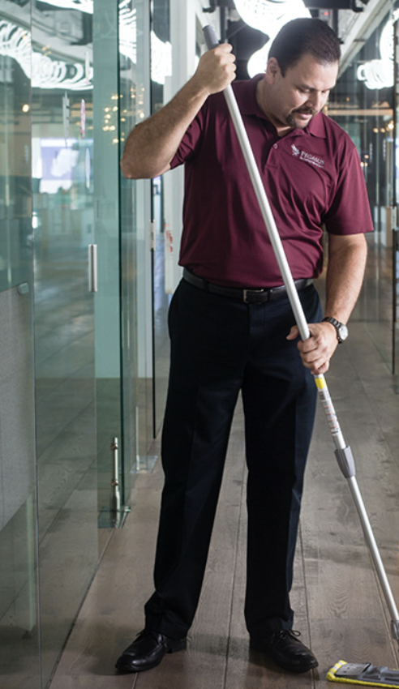
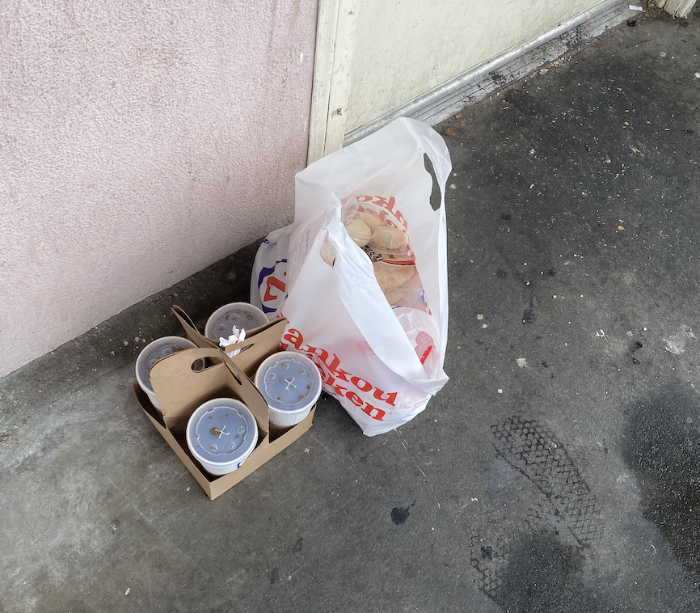
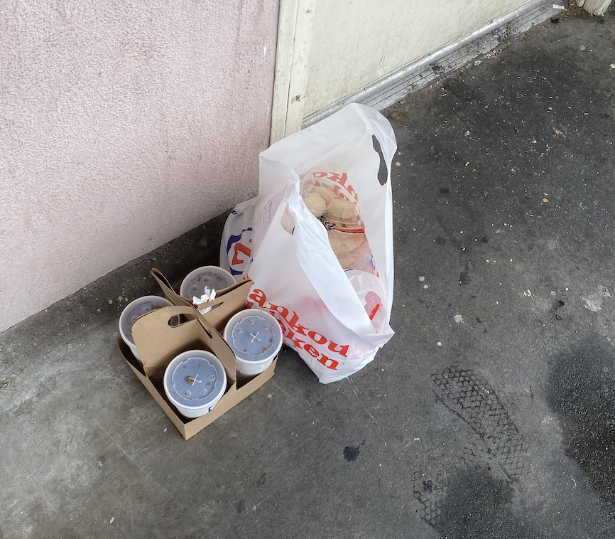
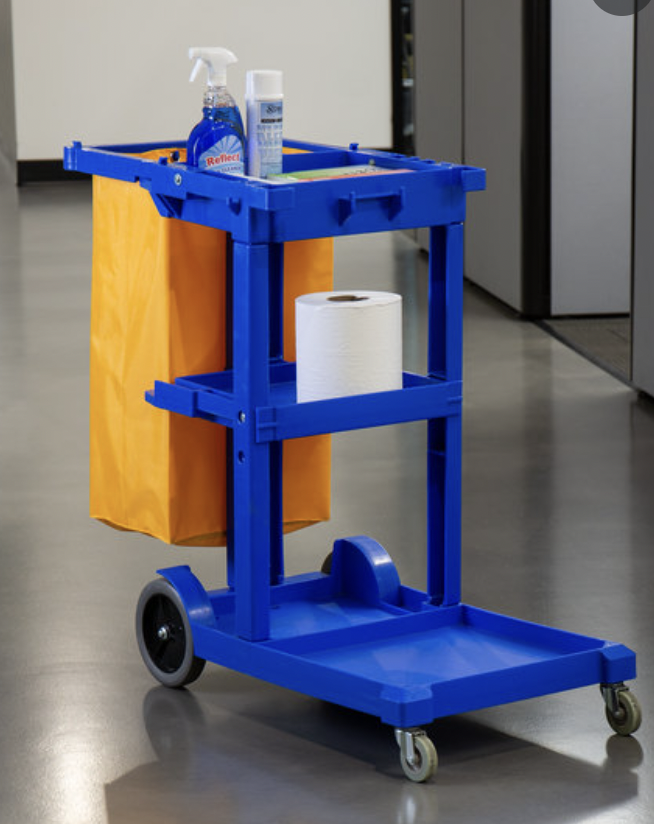
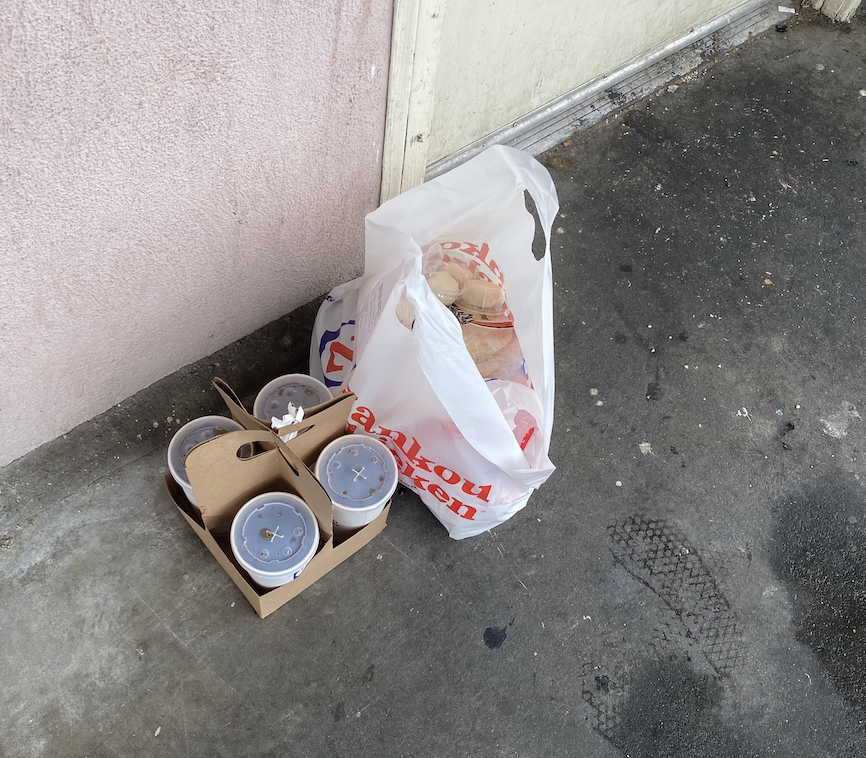
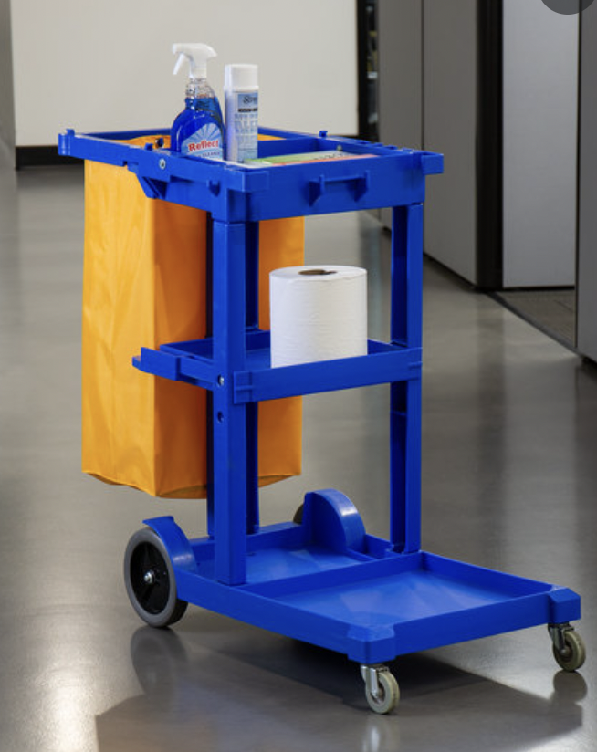

Jim Zaman
Hello, my name is Jim Zaman and I am an up and coming political scientist hoping to induce positive changes on our society! For context, I come from a background of civil servants and I always felt that I have had a knack of understanding people and their diverse situations. With all this information comes a certain assumption, that I am not ready to bring my talents to South Beach. To that I say, phooey! I am coming with a portfolio of skills and talents that go unmatched, and I believe I can go head to head with the best political scientists of them all. Someone tell Sigmund Freud to watch out, because I am ready to debunk his theories and his existence. But to elaborate, I hail from Mission Bend, Texas, a place known for having terrible crime and drugs occur on its streets. I know this all too well, drug dealers would push their goods outside my window! This has inspired me to create this website, because I feel that I have to share the story that I have lived all too well. Furthermore, this pandemic really has gotten the best of me at times. I do tend to procrastinate and hold every thing to the last minute, which is a tad worrisome. But alas, I always get the job done in a safe and efficient matter. The supply chain issues exasperated by this pandemic have affected me dearly, my new Tesla has been delayed for another six months! Whilst that is a blow, I continue to persevere with my head up high. I definitely am someone that you want on your workforce. I bring punctuality and a sweet sense of humor to any team that I'm on! How could you not want part of this? You'll find me in the office at six in the morning wiping the chalkboards and refilling the cupboards. No one asks me to do this, I just feel a sense of obligation to take care of my team! Working hard is my biggest flaw! Let me tell you! They asked me to clock out five so I clocked out at five. Five AM that is! The lights may be off but these fingers are at work, and let me tell you, they certainly can put a solid job in. Anyhow, I love playing video games and reading books. I currently am reading through the book, Diary of a Wimpy Kid: Dog Days, and let me tell you, it is an absolute hoot! I could not recommend the series enough. It truly is awe-inspiring so to speak. Furthermore, I am a certified EMT and I can help out anyone during a medical emergency. I also am a certified vehicle reseller with a dealers license, so I can virtually sell or buy any car that the team may need. I am like a swiss-army knife of sorts. I can just do it all, and I want to do it all for my team. Whatever it takes, I will be willing to do. Thank you and god bless.
Experience
Stock Boy
• Filled shelves diligently
• Removed misplaced items from sales floor
• Operated trash compactor to increase productivity
Food Delivery
• Delivering food in a timely and efficient manner
• Managing customer satisfaction
Education
UC Riverside
Portfolio

 


